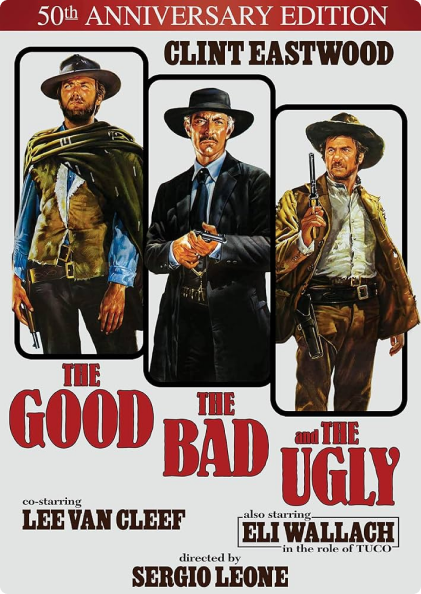

The Good, the Bad and the Ugly
1966
A bounty hunting scam joins two men in an uneasy alliance against a third in a race to find a fortune in gold buried in a remote cemetary
A bounty hunting scam joins two men in an uneasy alliance against a third in a race to find a fortune in gold buried in a remote cemetary
Blondie, The Good (Clint Eastwood), is a professional gunslinger who is out trying to earn a few dollars. Angel Eyes, The Bad (Lee Van Cleef), is a hitman who always commits to a task and sees it through--as long as he's paid to do so. And Tuco, The Ugly (Eli Wallach), is a wanted outlaw trying to take care of his own hide. Tuco and Blondie share a partnership making money off of Tuco's bounty, but when Blondie unties the partnership, Tuco tries to hunt down Blondie. When Blondie and Tuco come across a horse carriage loaded with dead bodies, they soon learn from the only survivor, Bill Carson (Antonio Casale), that he and a few other men have buried a stash of gold in a cemetery. Unfortunately, Carson dies and Tuco only finds out the name of the cemetery, while Blondie finds out the name on the grave. Now the two must keep each other alive in order to find the gold. Angel Eyes (who had been looking for Bill Carson) discovers that Tuco and Blondie met with Carson and knows they know where the gold is; now he needs them to lead him to it. Now The Good, the Bad, and the Ugly must all battle it out to get their hands on $200,000.00 worth of gold. —Jeremy Thomson